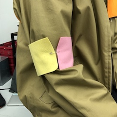

商品概要
服につける腕章
作業進捗
進捗を時間軸でつらつらと書いていく
軍隊がつける腕章がイメージ。
また、途中でアイデアが変わったり、自身の判断で開発を終了する場合もあると思います。
その場合はその旨を記録するようにしてください。
ダーティープロトタイピング
参考事例の商品
フランス軍アームバンドExample
ペア（クロキリミさん）からの質問
- Q; 生地はどんなのですか？
- A; 布も使いたいが布以外のも使いたい
- Note; 布以外だと何がある？
- Q; 付ける部分は何ですか？
- A; 安全ピン、ベルクロ、ボタン、ベルト
- Note; どれが一番しっくりくるのか？
- Q; 何につけますか？
- A; 袖のある服に付ける
- Note; アクセントになる